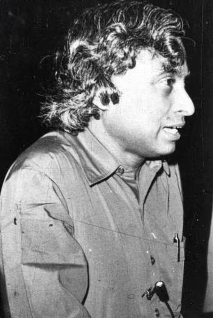

Dr. APJ Abdul Kalam (1931 - 2015) was a luminary whose life resonates as a beacon of inspiration for generations. Born on October 15 in Rameswaram, Tamil Nadu, India, Kalam's journey from humble beginnings to becoming a globally recognized scientist and the 11th President of India is a testament to the power of dreams and determination. Affectionately known as the "People's President," Kalam's indomitable spirit and dedication to science, education, and societal upliftment have left an indelible mark on the hearts of millions.
Timeline of Dr. Kalam's Life
- 1931:Born on October 15 in Rameswaram, Tamil Nadu, India, to a family of humble means, instilling early lessons of perseverance and humility.
- 1940s:Endured financial challenges but displayed a keen interest in academics and a passion for learning.
- 1954: Graduated in Aeronautical Engineering from the Madras Institute of Technology, marking the commencement of his scientific journey.
-  1958-1982: Joined the Defence Research and Development Organisation (DRDO) and played a pivotal role in India's civilian space program at the Indian Space Research Organisation (ISRO).
-
 1969: Witnessed the successful launch of India's first satellite, Aryabhata, a milestone in the nation's space exploration.
1969: Witnessed the successful launch of India's first satellite, Aryabhata, a milestone in the nation's space exploration. - 1980: Elevated to the role of Director of the Satellite Launch Vehicle (SLV) project, overseeing the development of indigenous satellite launch capabilities.
- 1990s:
Contributed significantly to India's defense capabilities, leading projects like Agni and Prithvi missile development.
- 1997: Awarded the Bharat Ratna, India's highest civilian honor, in recognition of his exceptional contributions to science and public service.
-
 1998: Orchestrated India's nuclear tests at Pokhran, codenamed Operation Shakti, solidifying the country's position in the global arena.
1998: Orchestrated India's nuclear tests at Pokhran, codenamed Operation Shakti, solidifying the country's position in the global arena. - 2002-2007: Served as the 11th President of India, emphasizing the importance of education, youth, and societal development during his tenure.
- Post-Presidential Years: Engaged in various educational and inspirational endeavors, interacting extensively with students and imparting wisdom.
- 2011: Launched the "What Can I Give Movement," urging individuals to contribute selflessly to society.
- 2015: Passed away on July 27 in Shillong, Meghalaya, leaving behind an unparalleled legacy of leadership, vision, and unwavering commitment to the betterment of India.
"Dr. Kalam's legacy is a beacon of inspiration for countless individuals, a testament to the power of dreams and the pursuit of knowledge." - Indian Scientist and Educator, Dr. R. A. Mashelkar

In conclusion, Dr. APJ Abdul Kalam's life was a testament to the fusion of brilliance and humility. His unwavering commitment to science, education, and the well-being of his fellow citizens has left an indelible mark on the nation. As we reflect on his journey, let us carry forward the values he embodied and continue to strive for excellence in every endeavor.